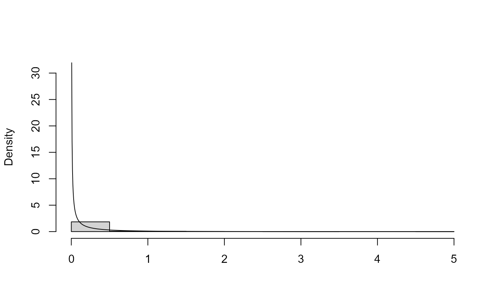
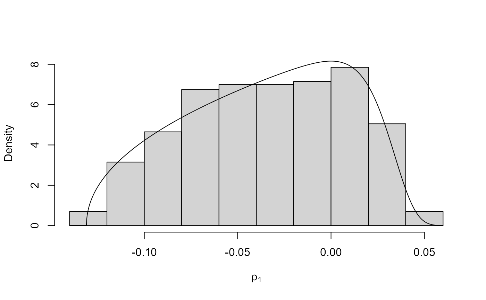

Finds a value of the Box-Cox transformation parameter lambda (\(\lambda\))
for which the (positive univariate) random variable with log-density
\(\log f\) has a density closer to that of a Gaussian random
variable. Works by estimating a set of quantiles of the distribution implied
by \(\log f\) and treating those quantiles as data in a standard
Box-Cox analysis. In the following we use theta (\(\theta\)) to
denote the argument of \(\log f\) on the original scale and
phi (\(\phi\)) on the Box-Cox transformed scale.
Arguments
- logf
A function returning the log of the target density \(f\).
- ...
further arguments to be passed to
logfand related functions.- ep_bc
A (positive) numeric scalar. Smallest possible value of
phito consider. Used to avoid negative values ofphi.- min_phi, max_phi
Numeric scalars. Smallest and largest values of
phiat which to evaluatelogf, i.e., the range of values ofphiover which to evaluatelogf. Any components inmin_phithat are not positive are set toep_bc.- num
A numeric scalar. Number of values at which to evaluate
logf.- xdiv
A numeric scalar. Only values of
phiat which the density \(f\) is greater than the (maximum of \(f\)) /xdivare used.- probs
A numeric scalar. Probabilities at which to estimate the quantiles of that will be used as data to find lambda.
- lambda_range
A numeric vector of length 2. Range of lambda over which to optimise.
- phi_to_theta
A function returning (inverse) of the transformation from
thetatophiused to ensure positivity ofphiprior to Box-Cox transformation. The argument isphiand the returned value istheta.- log_j
A function returning the log of the Jacobian of the transformation from
thetatophi, i.e. based on derivatives of \(\phi\) with respect to \(\theta\). Takesthetaas its argument. If this is not supplied then a constant Jacobian is used.
Value
A list containing the following components
- lambda
A numeric scalar. The value of lambda.
- gm
A numeric scalar. Box-Cox scaling parameter, estimated by the geometric mean of the quantiles used in the optimisation to find the value of lambda.
- init_psi
A numeric scalar. An initial estimate of the mode of the Box-Cox transformed density
- sd_psi
A numeric scalar. Estimates of the marginal standard deviations of the Box-Cox transformed variables.
- phi_to_theta
as detailed above (only if
phi_to_thetais supplied)- log_j
as detailed above (only if
log_jis supplied)
Details
The general idea is to estimate quantiles of \(f\) corresponding
to a set of equally-spaced probabilities in probs and to use these
estimated quantiles as data in a standard estimation of the Box-Cox
transformation parameter lambda.
The density f is first evaluated at num points equally
spaced over the interval (min_phi, max_phi). The continuous
density \(f\) is approximated by attaching trapezium-rule estimates of
probabilities to the midpoints of the intervals between the points. After
standardizing to account for the fact that \(f\) may not be normalized,
(min_phi, max_phi) is reset so that values with small
estimated probability (determined by xdiv) are excluded and the
procedure is repeated on this new range. Then the required quantiles are
estimated by inferring them from a weighted empirical distribution
function based on treating the midpoints as data and the estimated
probabilities at the midpoints as weights.
References
Box, G. and Cox, D. R. (1964) An Analysis of Transformations. Journal of the Royal Statistical Society. Series B (Methodological), 26(2), 211-252.
Andrews, D. F. and Gnanadesikan, R. and Warner, J. L. (1971) Transformations of Multivariate Data, Biometrics, 27(4).
See also
ru and ru_rcpp to perform
ratio-of-uniforms sampling.
find_lambda and find_lambda_rcpp
to produce (somewhat) automatically
a list for the argument lambda of ru/ru_rcpp
for any value of d.
find_lambda_one_d_rcpp for a version of
find_lambda_one_d that uses the Rcpp package to improve
efficiency.
Examples
# Log-normal density ===================
# Note: the default value of max_phi = 10 is OK here but this will not
# always be the case.
lambda <- find_lambda_one_d(logf = dlnorm, log = TRUE)
lambda
#> $lambda
#> [1] 0.06564725
#>
#> $gm
#> [1] 0.9535484
#>
#> $init_psi
#> [1] -0.06345259
#>
#> $sd_psi
#> [1] 0.9753502
#>
x <- ru(logf = dlnorm, log = TRUE, d = 1, n = 1000, trans = "BC",
lambda = lambda)
# Gamma density ===================
alpha <- 1
# Choose a sensible value of max_phi
max_phi <- qgamma(0.999, shape = alpha)
# [I appreciate that typically the quantile function won't be available.
# In practice the value of lambda chosen is quite insensitive to the choice
# of max_phi, provided that max_phi is not far too large or far too small.]
lambda <- find_lambda_one_d(logf = dgamma, shape = alpha, log = TRUE,
max_phi = max_phi)
lambda
#> $lambda
#> [1] 0.2727968
#>
#> $gm
#> [1] 0.5689906
#>
#> $init_psi
#> [1] -0.2016904
#>
#> $sd_psi
#> [1] 0.7835109
#>
x <- ru(logf = dgamma, shape = alpha, log = TRUE, d = 1, n = 1000,
trans = "BC", lambda = lambda)
alpha <- 0.1
# NB. for alpha < 1 the gamma(alpha, beta) density is not bounded
# So the ratio-of-uniforms emthod can't be used but it may work after a
# Box-Cox transformation.
# find_lambda_one_d() works much better than find_lambda() here.
max_phi <- qgamma(0.999, shape = alpha)
lambda <- find_lambda_one_d(logf = dgamma, shape = alpha, log = TRUE,
max_phi = max_phi)
lambda
#> $lambda
#> [1] 0.06758891
#>
#> $gm
#> [1] 0.008056577
#>
#> $init_psi
#> [1] -0.0342618
#>
#> $sd_psi
#> [1] 0.009372876
#>
x <- ru(logf = dgamma, shape = alpha, log = TRUE, d = 1, n = 1000,
trans = "BC", lambda = lambda)
# \donttest{
plot(x)

plot(x, ru_scale = TRUE)

# }